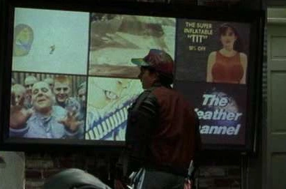
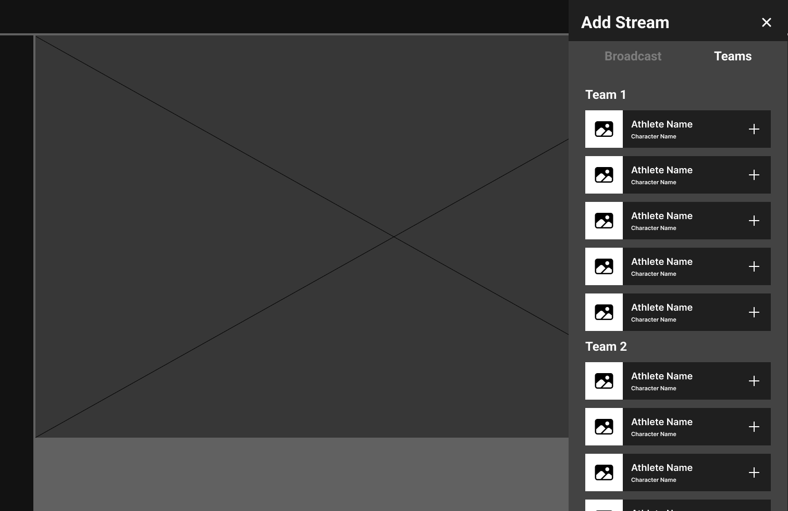
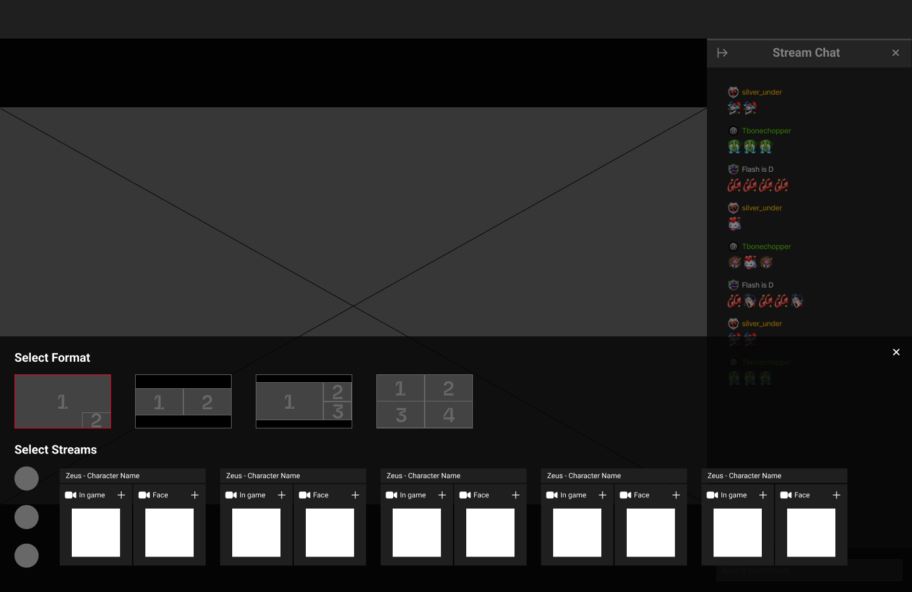
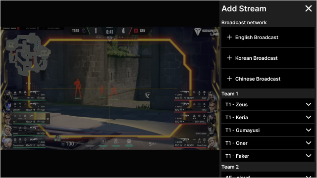
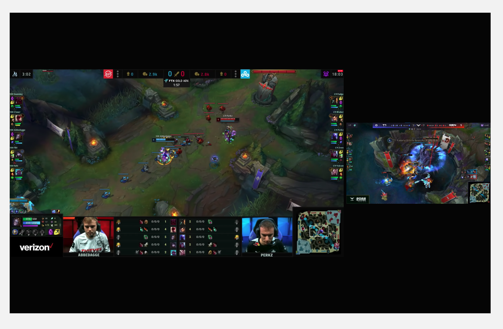
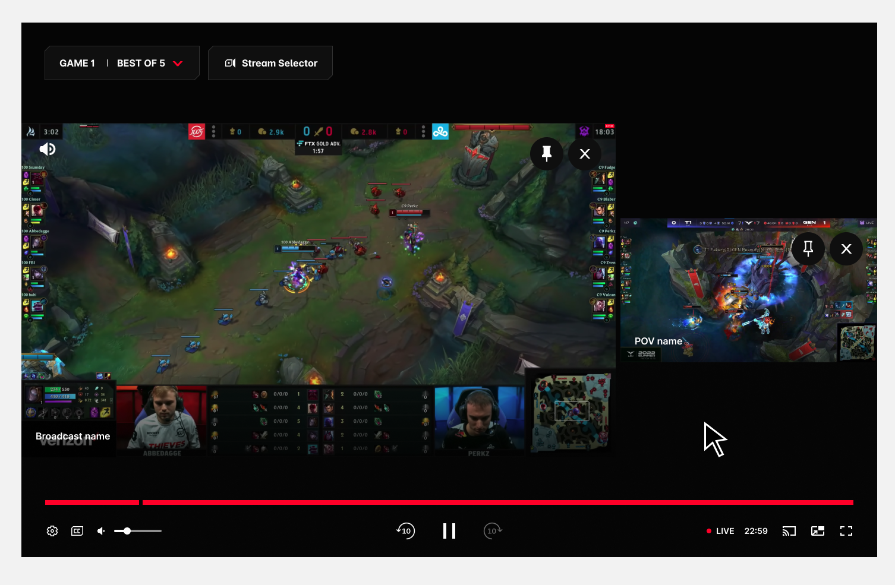
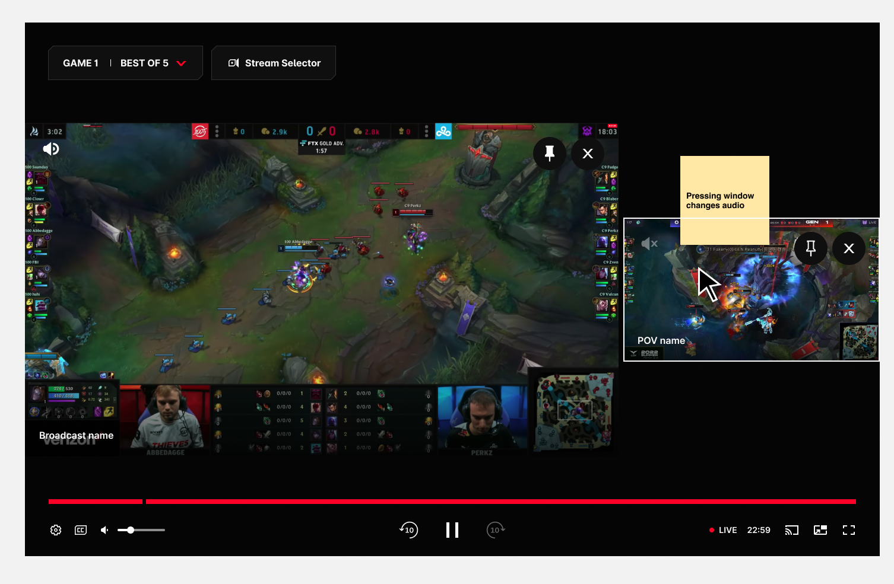
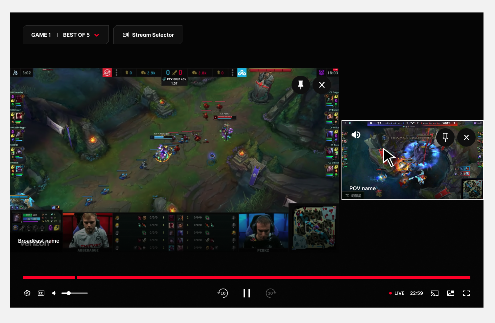
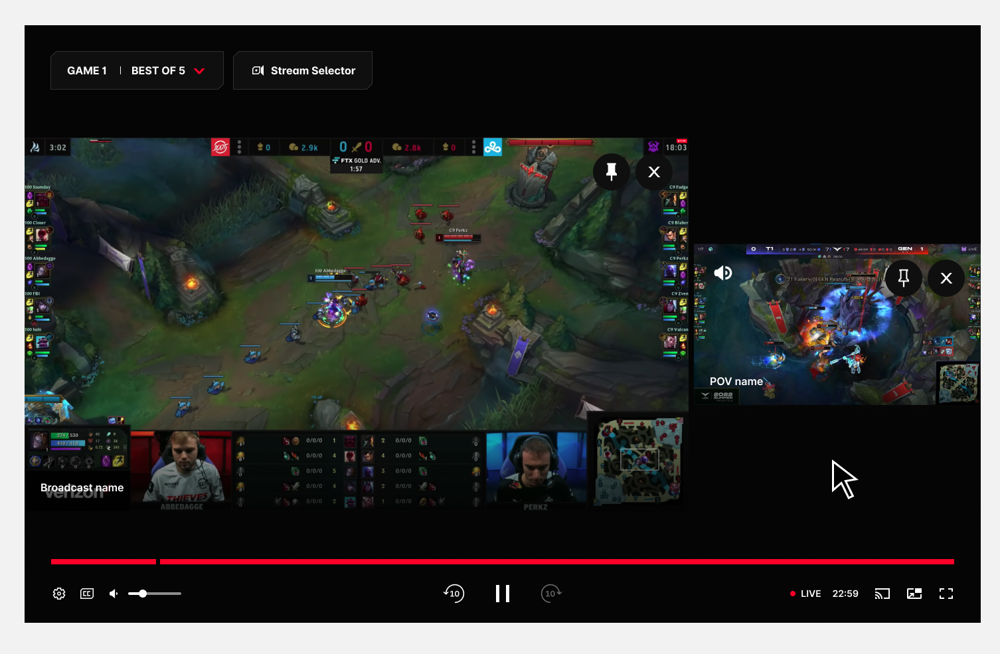

Broadcasting's next frontier promises fans every angle at once. The temptation is always more — more streams, more POVs, more screens. Our research said the opposite: full control only works when the experience stays effortless.

Multiview is fast becoming broadcasting's flagship feature for sports. It feeds Gen Z's appetite for constant stimulation, and it fits the cultural shift sports media is making toward second-screen, stat-driven viewing.
But "show more streams" isn't a design. Handing fans a wall of video can just as easily bury the match as enhance it. We were tasked with exploring the best possible Multiview experience — and the brief boiled down to three deceptively simple questions:
How many is right?What's the best number of concurrent streams on one screen before the match stops making sense?
Who gets heard?Five streams can't all talk at once — which audio gets prioritised, and who decides?
Is broadcast enough?The broadcast is professionally directed. Why would viewers ever want extra POVs at all?
We spent a week with eight participants canvassing attitudes towards professional League of Legends broadcasts — before showing them a single Multiview concept.
The research flipped the premise. Multiview was highly desired — but not the maximalist version anyone imagined.
"Yes, the broadcast is enough. The extra POV is the treat — not the meal."
— The finding that scoped the whole featureRapid low-fidelity exploration in Figma, with one non-negotiable: the fan must never lose sight of the match.
We played with side trays and bottom trays, and tested two mental models for building a Multiview. The additive approach — add streams one by one and let the layout reshape itself — felt flexible but unpredictable. The form-first approach — pick "I want 3 streams", watch the empty slots appear, then fill them — won decisively:



A working prototype brought the form-first model to life — exploring how fans pin the streams they care about and add new ones without ever losing the match.
The prototype gave the client the confidence to move forward — with one strategic note that reshaped the menu.
The watch experience would eventually carry two side panels — Chat on one side, the Stats panel on the other. A third side panel for Multiview would have crowded the player beyond saving. So the Multiview menu became a fullscreen modal within the player, while the mouse-over playback experience stayed exactly as prototyped.
Stream Selector — opens the Stream Selector panel.
Stream windows — a maximum of 3 concurrent streams.
Spotlight — moves the stream to the left side and enlarges it.
Remove stream — closes that stream window.
Broadcast / athlete name — identifies the stream source. Single line, truncated with '…'.
Audio source — marks which window owns the audio. Fully visible with controls; shown faded on hover over unselected streams.
Mouseover highlight — feedback marking the press target, especially for switching audio.
Player controls — one set for all streams, since every stream is the same event.
Stream 1 tab (non-focused) — configures stream 1; the close icon removes it.
Stream 2 tab (focused) — configures stream 2; the close icon removes it.
Add stream — adds a stream up to the maximum of 3, then disappears until one is removed.
Exit — closes the selector, back to playback controls.
Video streams — broadcast and athlete options; broadcasts max out at two rows of five.
Non-selected tab's stream — shown disabled until its tab is selected.
Selected tab's stream — shown active; disables when another tab takes focus.
Client direction: the selector runs as a fullscreen menu within the player — the watch experience already carries Chat and Stats side panels.
Research said broadcast audio wins by default, but the swap to a player POV had to be effortless and reversible. The flow, in five steps:
The fan wants to switch from broadcast audio to a player POV's audio.

They tap the screen for playback controls — the audio icon shows active on Stream 1 (broadcast).

Hovering over Stream 2 highlights it with a white stroke — its audio icon sits inactive.

Clicking the highlighted stream activates its audio — the faded icon turns bold white.

Audio now plays from the player POV on Stream 2. One click back restores the broadcast.

What started as "a mechanism for adding streams" became a full system for adding, removing, and prioritising both video and audio.
There was far more to unpack than the initial brief suggested — every answer (how many streams?) opened a new question (then whose audio? whose video leads?). The discipline was holding onto what the research kept saying: the broadcast is the anchor, the extra POV is the treat, and control means nothing if the fan loses the match. We shipped the final solution as a team confident it was best in class.
The takeaway: when a feature's whole promise is "more", the designer's job is to find the point where more stops helping — and build the experience around that line, not past it.